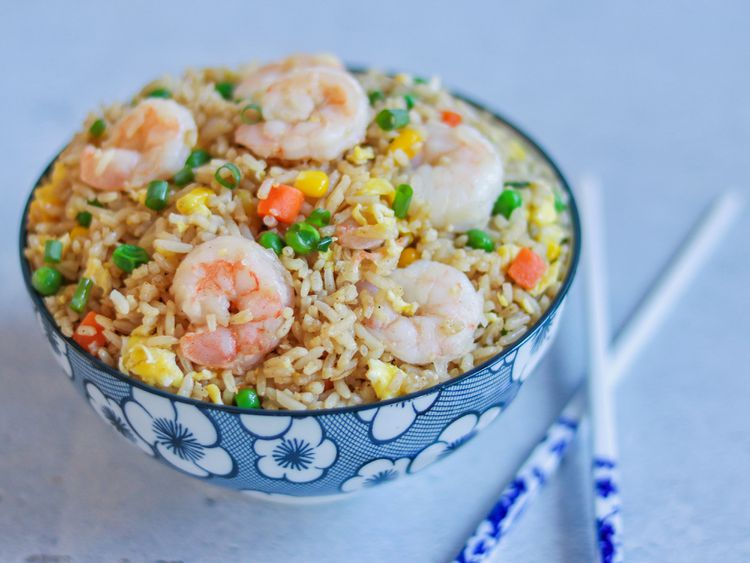

Easy Shrimp Fried Rice

This the part two of this fake website. But look at the fired rice, YUM!
Ingredients
- Oils: This shrimp fried rice recipe starts with a mix of olive oil and sesame oil.
- Shrimp: A pound of peeled and deveined shrimp should be enough to make four servings.
- Frozen vegetables: Frozen peas, frozen carrots, and frozen corn add color and nutrients.
- Garlic: Take the flavor up a notch with two cloves of garlic (or more, to taste).
- Eggs: You’ll need three lightly beaten eggs for this shrimp fried rice recipe.
- Green onions: Thinly sliced green onions lend a pop of bold color and flavor.
Steps
- Cook the shrimp in oil, then remove from the pan and set aside.
- Add the frozen vegetables to the skillet and cook until they begin to soften.
- Add the garlic and cook until fragrant, then push the veggies to one side of the skillet.
- Scramble the eggs on the other side.
- Stir the shrimp, rice, and green onions into the skillet.
- Stir in the soy sauce and seasonings, then cook until the shrimp is reheated.